The journey at a glance
index.html, with its styles in a <style> tag and its code in a <script> tag, is the easiest thing to host. You upload one file to GitHub, switch on Pages, and you get a link to send to your test participants. You don't have folders to manage or missing files to chase.
It's also exactly what the Desktop Tester expects: one index.html dropped into its prototype folder.
Where will you test it?
Part 1 is almost the same either way. The choice changes a few checks along the way and the whole of Part 2. You can switch at any time.
You'll publish your prototype on its own GitHub Pages site and send testers the link.
You'll put your prototype into your own copy of the Desktop Tester app. Testers get one link, and the app guides them through your tasks. Steps marked Desktop Tester are extra checks for this route.
Before you start: a tour of the Claude workspace
If you haven't used Claude before, watch these four short videos first. They show the screens of the free plan in the browser and what each one is for. You'll mostly use the home screen, but it helps to know where the rest are.
Part 1: Build it in Claude
Each step starts with a short video (about 20 seconds) showing what to do, followed by the full instructions. Steps 4–7 use real screens from the free plan. The other steps use simplified screens.
Get set up
Have these ready before you start.
- A laptop or desktop and an up-to-date browser (Chrome, Edge, Firefox or Safari). Phones are fine for testing later but awkward for this part.
- A free Claude account. Sign up at claude.ai with your email or Google account.
- Your finished prompt from the Vibe Coding Prompt Studio, with the Free plan option selected.
- A text editor to look inside the file: Notepad (Windows), TextEdit (Mac) or VS Code if you have it.
- A folder for your project, for example
my-prototype. - A free GitHub account for Part 2. Sign up at github.com.
- Desktop TesterA laptop or desktop for the testing too: the Desktop Tester doesn't run on phones. You'll download the app itself in Part 2.
Copy your prompt from the Prompt Studio
Use the copy button so nothing gets left out.
- Open the Vibe Coding Prompt Studio.
- Check your choices: your scenario, the screens, your design system, Free plan, and Output format: One HTML file.
- Desktop TesterAlso set Device to Desktop / laptop and tick Ready for Desktop Tester. This adds a Testing section to your prompt, so tasks can tick themselves off later.
- Click the Copy button. Selecting by hand can miss the bottom of a long prompt.
- Optional: paste it into a text file and save it as
my-prompt.txt. If something goes wrong you can start a fresh chat without rebuilding the prompt.
Make sure the prompt asks for one file
A quick safety check before you send.
Prompts from the Studio already ask for a single file. Read the end of your prompt anyway. If you can't find a clear line about one HTML file with everything inline, paste this block at the very end:
OUTPUT FORMAT — IMPORTANT - Give me ONE complete HTML file, ready to save as index.html. - Put ALL CSS inside a single <style> tag in the <head>. - Put ALL JavaScript inside a single <script> tag before </body>. - Do not use separate .css or .js files, and no React, build tools or npm. - Only use external links for web fonts or a design system's CDN stylesheet. - Use inline SVG, emoji or CSS shapes instead of image files. - Use made-up sample data written into the code; no real logins or servers. - Make every button and link the user taps actually do something. - Make it work on a phone-sized screen as well as desktop. - Show it as an artifact I can preview.
OUTPUT FORMAT — IMPORTANT - Give me ONE complete HTML file, ready to save as index.html. - Put ALL CSS inside a single <style> tag in the <head>. - Put ALL JavaScript inside a single <script> tag before </body>. - Do not use separate .css or .js files, and no React, build tools or npm. - Only use external links for web fonts or a design system's CDN stylesheet. - Use inline SVG, emoji or CSS shapes instead of image files. - Use made-up sample data written into the code; no real logins or servers. - Make every button and link actually do something. - Show it as an artifact I can preview. TESTING (it will be user tested in the Desktop Tester app, shown in a frame about 900px wide on a laptop) - Give every screen its own URL hash, using a short lowercase name (e.g. #home, #checkout). Show the right screen when the hash changes, and the first screen if there is no hash. Every link and button that moves to another screen must change the hash. - Only reach a success or confirmation screen once the action has really worked, e.g. after the form passes validation. - Give every important button and link a short, unique id in lowercase with dashes (e.g. id="confirm-booking"). - Show the full desktop layout from 860px wide, including the full navigation with no burger menu. - Don't use alert(), confirm(), prompt(), window.top, or new windows or tabs. - When you've finished, give me two short tables: every screen's #hash and what it shows, and every important button id and what it does.
If you ticked Ready for Desktop Tester in the Studio, your prompt already has a TESTING section like this, so you don't need to add it.
Start a new chat and send the prompt
Use a fresh chat for each prototype.
- Go to claude.ai and sign in.
- Start a new chat with ＋ New at the top of the sidebar. Old conversations add clutter and use up your allowance faster.
- Check the switch under the message box is on Chat, not Cowork, and leave the model as it is. The home screen tour shows where these are.
- Click in the message box and paste (
Ctrl + Von Windows,⌘ + Von Mac). - Scroll through the box quickly to check the whole prompt pasted in.
- Press Enter or click the send arrow.
- Wait. A full prototype can take a minute or two. Don't stop it or send anything until it has finished.
Test it in the preview
Use it the way a test participant would.
Before you ask for any changes, go through the prototype and write down everything that's wrong in one list. You'll send all the fixes together, which saves messages.
- Use the expand button at the top right of the panel to see it full size.
- Read Claude's explanation in the chat. It tells you how to walk through the main task.
- Does it open on the right first screen?
- Can you complete the main task in your scenario from start to finish?
- Does every tab, button and link do something, with no dead ends?
- Can you always get back (back button, home, close)?
- Do forms respond: error messages, success messages, data that appears afterwards?
- Does it look like your chosen design system (colours, buttons, type)?
- Is the text readable, with enough contrast and nothing cut off?
- Desktop TesterFind the two tables Claude gave you at the end of its reply: the screen addresses (
#home,#checkout…) and the button ids. Copy them into a text file calledmy-test-setup.txtin your project folder. You'll use them to set up the tasks in Part 2.
Fix it with small, clear requests
Ask for one batch of changes at a time.
Type your fixes into the message box of the same chat. Short, specific requests work better than "make it better". Say what is wrong, where it is, and what should happen.
✗ Vague
It doesn't work properly, fix it and make it look nicer.
✓ Specific
On the Stock levels tab, the "Create reorder list" button does nothing. It should show a list of the low-stock items. Also make the tab labels larger.
Please make these changes and give me the COMPLETE updated single HTML file (not just the changed parts): 1. On the [screen name] screen, [what's wrong]. It should [what should happen]. 2. On the [screen name] screen, [what's wrong]. It should [what should happen]. 3. [Any visual change, e.g. "use the primary button style for all main actions"]. Keep everything else exactly the same.
Desktop TesterBuilt it without the testing instructions, or Claude didn't give you the tables? Send this once:
Update this prototype so it works with the Desktop Tester app, which shows it in a frame about 900px wide on a laptop. Give every screen its own URL hash, e.g. #home, #checkout, including success screens, and make every link and button that moves screen change the hash. Only reach a success screen once the action has really worked. Show the full desktop layout from 860px wide, with no burger menu. Give every important button a short, unique id. Don't change anything else. Give me the COMPLETE updated single HTML file, then list every screen hash and button id in two tables.
Repeat steps 5 and 6 until the prototype works well enough to test. Aim for three or four rounds at most. It's a prototype for testing ideas, so it doesn't need to be perfect.
Download it as HTML
Use Export to save a copy to your computer.
- At the top of the prototype panel, click Export.
- In the menu, find HTML: Standalone web page and click the download arrow next to it.
- The file goes to your Downloads folder, named after your prototype.
Check it's one file and name it index.html
Look inside the download, then rename it.
Open the downloaded file in a text editor, not a browser, so you see the code. Right-click the file and choose Open with:
- Windows: Notepad (or VS Code).
- Mac: VS Code, or TextEdit. If TextEdit shows a web page instead of code, go to TextEdit → Settings → Open and Save, tick Display HTML files as HTML code instead of formatted text, then open the file again.
Check these four things. You don't need to understand the code, only spot the patterns:
- It starts with
<!DOCTYPE html>and ends with</html>. If the end is missing, the build was cut off. - There's a
<style>tag near the top with lots of styling inside it. - There's a
<script>tag near the bottom with code inside it. - There are no lines like
<link href="styles.css">or<script src="app.js">pointing at your own separate files. Links tofonts.googleapis.comor a design system's library online are fine.
✓ Single file
<head>
<style>
.btn { background:#8a4b2a; }
</style>
</head>
<body> …
<script>
function showTab(id){ … }
</script>
</body>
</html>✗ Split into files
<head>
<link rel="stylesheet"
href="styles.css">
</head>
<body> …
<script src="app.js"></script>
</body>Desktop TesterThree more quick checks. Use Ctrl + F (⌘ + F on a Mac) to search the file:
- Search for
hashchangeorlocation.hash. Finding one means each screen has its own address. - Search for
id="near your main buttons, e.g.id="confirm-booking". - Search for
alert(, with the bracket. You shouldn't find any: pop-ups block the tester's guide panel. Findingrole="alert"is fine. That's different: it helps screen readers read out error messages.
Missing any of these? Send the Make it test-ready prompt from step 6, then export again.
If it has been split, go back to the chat, send this, then export again:
Please combine everything into ONE complete HTML file: put all the CSS inside a <style> tag and all the JavaScript inside a <script> tag. No separate files. Don't change how anything looks or works.
Then rename it. Close the editor, rename the file to index.html, and move it into your project folder.
index.html
Use lowercase and no spaces. Make sure it isn't index.html.txt; on Windows, turn on View → File name extensions to check. GitHub Pages looks for index.html as the home page, so the right name gives you the shortest, cleanest link.
Test the saved file on your computer
Check it works outside Claude before you publish it.
- Double-click
index.html. It should open in your browser. - Run through the step 5 checklist again, quickly.
- Make the browser window narrow, about phone width, and check the layout still works. Or press
F12and use the phone icon in developer tools. - Desktop TesterMake the browser window about two thirds of the screen wide (roughly 900px, the size of the tester's frame). The full menu should still show, with no burger icon.
- Desktop TesterClick from screen to screen and watch the address bar. The end of the address should change, e.g.
index.html#checkout. That's what lets tasks tick themselves off. - If it works here, you're ready for Part 2: GitHub PagesPart 2: the Desktop Tester. 🎉
my-prototype/ ├── index.html ← your prototype (everything inside) └── my-prompt.txt ← optional backup of your prompt
my-prototype/ ├── index.html ← your prototype (everything inside) ├── my-test-setup.txt ← Claude's screen and button tables └── my-prompt.txt ← optional backup of your prompt
Troubleshooting: Claude
The preview is blank, or the downloaded file doesn't end with </html>
Long builds can get cut off. Avoid typing just "continue": the rest arrives as a separate piece that you can't join together on the free plan. Send this instead:
The prototype was cut off before it finished. Please rebuild the COMPLETE single HTML file from the start, but keep it shorter: fewer sample items, simpler styling, and only the screens needed for the main task.
If it still gets cut off, open a new chat and paste your prompt again with fewer screens.
I can't see the code, and "Code" says Upgrade
That's normal on the free plan. The Code item in the sidebar is Claude Code, a paid tool for programmers. You don't need it. You check the code yourself in step 8 by opening the downloaded file in a text editor.
I want to share a link, but it says sharing isn't included in my plan
The free plan can't share links to what Claude builds. Export the HTML (step 7) and publish it on GitHub Pages instead. That gives you a public link that works for anyone, with no Claude account needed.
I've hit my message limit
The free plan resets every few hours, and Claude shows when you can carry on. Meanwhile, export the current version (step 7) so nothing is lost, and write out your next batch of fixes so you're ready to send them.
Claude talks about React, JSX or "npm install"
That needs build tools, which is more than we want for a test prototype. Reply with:
Please rebuild this as plain HTML, CSS and vanilla JavaScript in ONE file. No React, no JSX, no npm, no build step. It must open by double-clicking index.html.
A fix broke something that used to work
Say exactly what broke and ask Claude to keep the rest: "Your last change broke the Stock levels tab. It no longer opens. Please fix that without changing anything else." This is also why it helps to export a working copy (for example index-v1.html) before each round of changes.
The design doesn't look like my chosen design system
Name the specifics: "Use [design system]'s button, card and input styles, its colour palette, and its font. Link its official library online if it has one." Some design systems don't have a simple online file. In that case, ask Claude to copy the look with CSS inside the file.
Images are missing when I open the saved file
The prototype points at image files you don't have. Ask: "Replace all images with inline SVG illustrations, emoji or coloured placeholder boxes so nothing depends on separate image files."
The preview has no styling, but the downloaded file looks fine
Nothing's wrong. Claude's preview blocks stylesheets loaded from other sites, which is how most design systems arrive. Your file keeps the link, so the styling appears when you open the downloaded index.html in your browser, and on GitHub Pages. Don't ask Claude to fix it: changing the link won't help, and pasting the whole design system into the file makes it too long for the free plan.
I chose "Separate pages" in the Studio and Claude gave me several files
Export only saves one file. Ask Claude to put them back together, then export again:
Combine these files into one self-contained HTML file with all the CSS in a <style> tag and all the JavaScript in a <script> tag. Each former page becomes a screen with its own URL hash. Don't change the design, content or behaviour.
Claude didn't give me the screen and button tables
Ask for them on their own, without a rebuild: "List every screen's #hash and what it shows, and every important button id and what it does, in two short tables. Don't change the prototype."
Part 2: Publish it on GitHub Pages
GitHub Pages turns your index.html into a real website with a public link that works on any phone or computer, so you can send it to your test participants. It's free, with no coding: you do everything in the browser.
index.html from Part 1.
Create a repository
A repository ("repo") is a folder on GitHub for one project.
- Sign in to github.com and open Repositories on your profile.
- Click the green New button.
- Type a Repository name: lowercase, no spaces, using
-or_between words, e.g.cafe_app. A green tick means the name is free. - Leave it Public. Free GitHub accounts can only use Pages with public repositories.
- Turn Add README on. You can leave the description for now; you'll add one in step 7.
- Scroll down and click Create repository.
your-username.github.io/cafe_app/. Short and clear is best.
Upload your file
Drag index.html into the repository.
- In your new repository, click Add file → Upload files.
- Drag
index.htmlfrom your project folder onto the page, or click choose your files. - Wait until the file appears in the list and has finished uploading.
- Click Commit changes.
Check it's called index.html
Forgot to rename it? You can fix it on GitHub.
Look at the file list. If your file is called index.html, skip to step 4. If it still has the long name from the download:
- Click the file name to open it.
- Click the pencil (Edit this file) at the top right of the code.
- In the name box at the top, change the name to
index.html, all lowercase with no spaces. - Click Commit changes…, check the message, then click Commit changes again.
index.html first. With any other name, your link shows an error page.
Turn on GitHub Pages
Tell GitHub to serve your file as a website.
- Click Settings in the bar at the top of your repository.
- Choose Pages in the menu on the left.
- Under Build and deployment, leave Source as Deploy from a branch.
- Under Branch, change None to main, and leave the folder as / (root).
- Click Save. A banner says GitHub Pages source saved.
main, which is all you need here.
Wait for it to deploy
GitHub builds your site. It usually takes a minute or two.
- Click Actions in the bar at the top of your repository.
- Open pages build and deployment. It goes through build, then deploy.
- A yellow dot means it's still working, so wait. A green tick and Success means your site is live.
Add the link and test it
Put the web address on your repository, then try it.
- Go back to the Code tab of your repository.
- Click the cog next to About on the right.
- Tick Use your GitHub Pages website. The address fills in for you.
- Click Save changes. Your link now appears under About.
- Click the link (or right-click → open in a new tab). Your address looks like
your-username.github.io/cafe_app/. - Run through the Part 1 step 5 checklist again, on your phone too.
Add a README and description
Explain what the prototype is, for testers, tutors and your portfolio.
A. Ask Claude to write it. Go back to the same chat you built the prototype in (find it under Chats and tasks in the sidebar) and send:
Based on the contents, create a brief description of the project. This prototype is intended for user experience (UX) testing, so provide a simple overview of the application's purpose, key features, and the files included in the prototype. The prototype file is called index.html. Create this as a README.md
Claude creates a README.md file. Click it to open it, then click Copy.
B. Add it on GitHub.
- In your repository, click README.md, then the pencil to edit it.
- Delete what's there and paste in Claude's text.
- Click Preview to check it, and read it through. If it mentions the old long file name, change it to
index.html. - Click Commit changes… then Commit changes.
C. Add a description. Click the cog next to About again, paste the first sentence or two of the README into Description, and click Save changes.
Troubleshooting: GitHub Pages
My link shows a "404 – There isn't a GitHub Pages site here" page
- Wait a couple of minutes and check Actions shows a green tick (step 5).
- Check the file is called exactly
index.html(step 3). - Check Settings → Pages shows Branch main and that it was saved (step 4).
- Check the repository is Public.
I changed my prototype but the website still shows the old one
To update it, export the new version from Claude, rename it to index.html, then use Add file → Upload files again. A file with the same name replaces the old one. Commit, wait for the green tick in Actions, then refresh the page (Ctrl + Shift + R or ⌘ + Shift + R) so your browser doesn't show a saved copy.
Pages says I need to upgrade or make the repository public
On a free account, Pages only works with public repositories. Go to Settings → General, scroll to the Danger Zone, and change the visibility to Public.
🎉 You're live. Now test it.
Your prototype is on the web at its own link, works on phones and computers, and needs no Claude account to use. Send the link or QR code to your participants and start your user testing.
After each round of testing, go back to the same Claude chat, fix what you learned (Part 1, steps 5–8), and upload the new index.html to replace the old one.
Part 2: Put it in the Desktop Tester
The Desktop Tester is a small app that runs on GitHub Pages. It shows your prototype on the right and a guide panel on the left that reads out each task and ticks it off as the tester completes it. You'll make your own copy of the app, put your index.html inside it, and write the tasks with a form. Everything happens in the browser, with no coding.
index.html from Part 1, and my-test-setup.txt (Claude's screen and button tables from step 5).
tests/project/. Your prototype goes in tests/project/prototype/ and your tasks in tests/project/test.json. Keep that name and your link never changes: for a new version, you just swap the files inside.
your-repo/
├── index.html ← the tester app (don't change)
├── builder.html ← the form for writing tasks
├── README.md
└── tests/
└── project/
├── test.json ← your tasks (step 6)
└── prototype/
└── index.html ← your prototype (step 4)
Download the Desktop Tester
Get your own copy of the app as a ZIP file.
- Open github.com/martinsolent/desktop_tester.
- Click the green Code button, then Download ZIP.
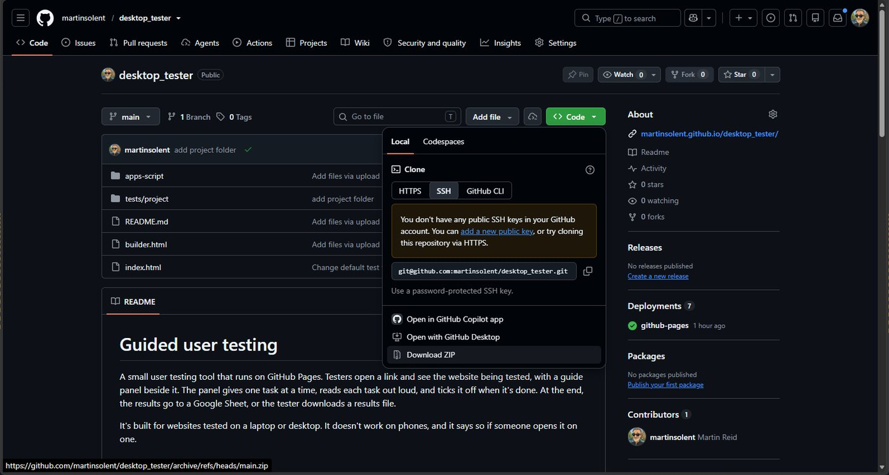
- Find the ZIP in your Downloads folder and unzip it (on Windows, right-click → Extract All; on a Mac, double-click it).
- Open the unzipped folder. Windows often puts another folder with the same name inside it. Keep opening folders until you see
index.html,builder.htmland atestsfolder.
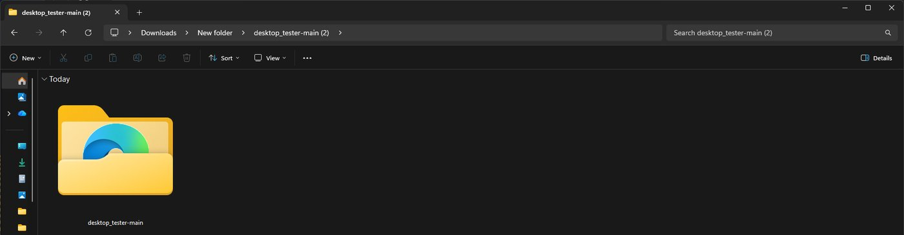
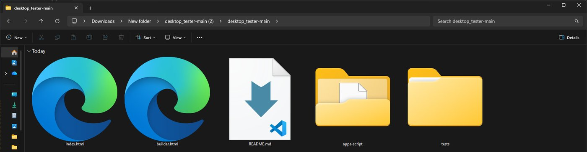
Make a new repository and upload the app
This repo will hold the tester and your prototype together.
usertest.- On GitHub, click New to make a repository. Give it a name such as
usertest(any name is fine: lowercase, no spaces). Leave it Public and click Create repository. - On the new repo's page, click uploading an existing file (or Add file → Upload files).
- Select everything inside the folder you opened at the end of step 1 (
index.html,builder.html,README.md,testsandapps-script) and drag it all into the upload box. Don't drag the outer folder itself. - Wait for every file to finish, then click Commit changes.
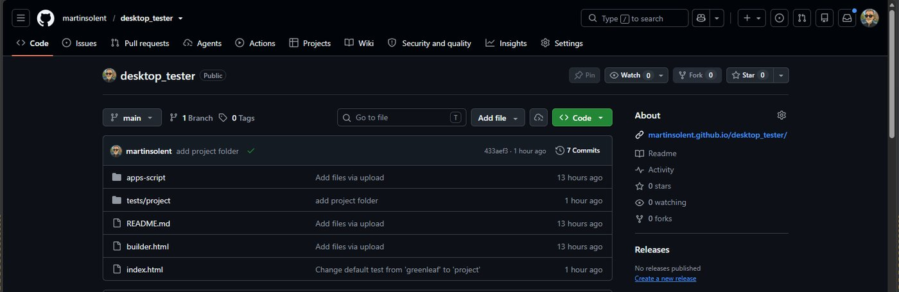
index.html sits at the top of the repo, not inside another folder.Turn on GitHub Pages
Same as for any site: this gives the app its link.
- Open Settings on your repo, then Pages in the left menu.
- Under Branch, choose main and / (root), then Save.
- Wait a minute or two. Open the Actions tab to watch it build: a green tick means it's live.
- Your link will be
https://your-username.github.io/usertest/. Open it. You should see the sample test running, which shows the app works.
Swap in your prototype
Replace the sample prototype with your own index.html.
Inside the app there's a tests folder with a project folder in it. That holds the sample's test.json and a prototype folder full of sample files. The pictures below show it in the unzipped download; your repo on GitHub has exactly the same folders.
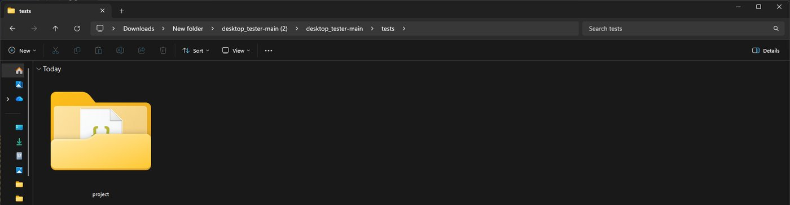
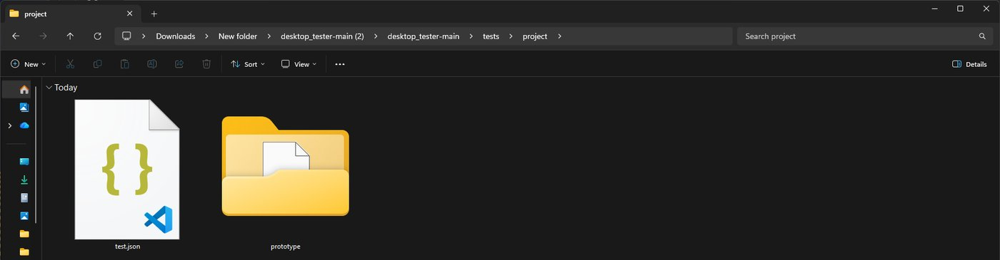
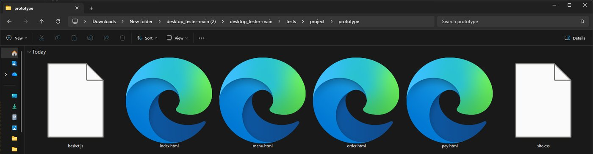
On GitHub in the browser
- Open the
prototypefolder. Click the … menu at the top right of the file list and choose Delete directory, then Commit changes. This removes the folder and every sample file in it. - Back in
tests/project, click Add file → Upload files. - On your computer, make a folder called
prototypeand put yourindex.htmlinside. Drag that wholeprototypefolder into the upload box. GitHub keeps the folder name. - Click Commit changes. You should now have
tests/project/prototype/index.html.
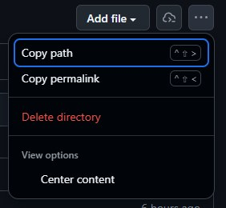
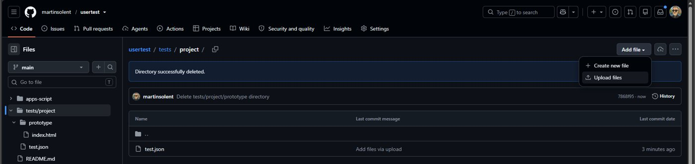
test.json is still there. Add file → Upload files brings in your new prototype folder.prototype/index.html. A file called index (1).html or cafe-app.html won't load. Rename it before you upload.
Using GitHub Desktop instead? Swap the files in your local copy
Deleting and uploading in the browser is fine for one file, but it gets fiddly with lots of changes. If you've cloned the repo with GitHub Desktop, do it in your normal file manager instead: delete the old files in tests/project/prototype, copy in your new index.html, then Commit and Push origin in GitHub Desktop.
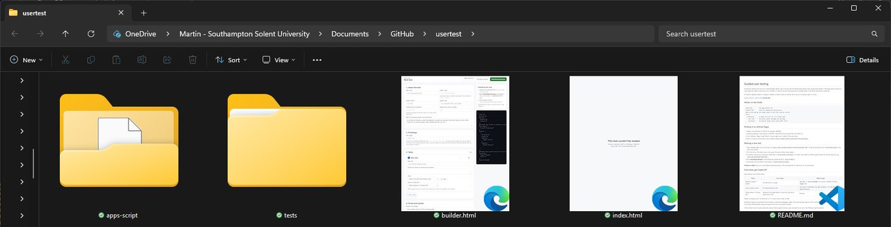
Write your tasks in the builder
A form that turns your tasks into a test.json file.
- Open
https://your-username.github.io/usertest/builder.html?test=project. It loads the current test so you can edit it. - Fill in the title and the welcome text testers will see first.
- Leave Folder name as
project. - Add one task for each thing you want testers to try. Write it as a goal, not instructions: "Book a table for two on Friday" rather than "Click Book".
- For each task, choose an option under How is it ticked off? Open
my-test-setup.txtand copy from Claude's tables:- Tester reaches a page or section: type the screen's hash, e.g.
#confirmed. Use a success screen if there is one, so the task only ticks once it really worked. - Tester clicks a button or link: type the button's id with a
#in front, e.g.#confirm-booking, or the button's exact text. - Tester presses "I've done this": for anything the app can't see, such as reading or comparing.
- Tester reaches a page or section: type the screen's hash, e.g.
- Click Preview as tester and run through every task. Each one should tick by itself.
- Click Download test.json.
project| Task | How is it ticked off? | Page or section |
|---|---|---|
| Find a room | Tester reaches a page or section | #results |
| Book it | Tester reaches a page or section | #success |
| Check the booking | Tester reaches a page or section | #bookings |
?test=project to the link to load what's on GitHub.
Upload test.json
Replace the sample tasks with yours.
- Check the downloaded file is called exactly
test.json. Rename it if your browser added(1). - On GitHub, open
tests/projectand click Add file → Upload files. - Drag in your
test.jsonand click Commit changes. Because the name matches, it replaces the sample file. There's no need to delete the old one first.
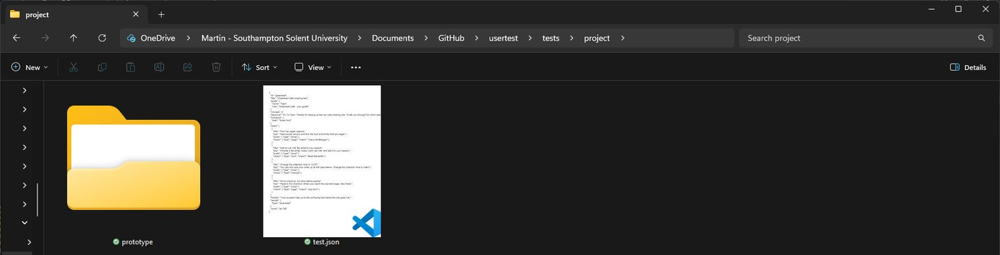
tests/project holds your prototype folder and your test.json.Try it, then share the link
Run the test yourself before anyone else does.
- Wait a minute for the Actions build to finish, then open
https://your-username.github.io/usertest/. That plain link is the one you share. - Still seeing the sample? Press
Ctrl + Shift + R(⌘ + Shift + Ron a Mac) to reload without the old copy. - Complete the whole test as if you were a participant. Check every task ticks, the audio plays, and the results download at the end.
- Send the link to your testers and ask them to use a laptop or desktop with Chrome, Edge or Firefox. Each tester downloads a results file at the end and sends it to you (or it goes straight to a Google Sheet, if you've set that up: see the README).
Troubleshooting: Desktop Tester
The page says "404" or "Couldn't load the test"
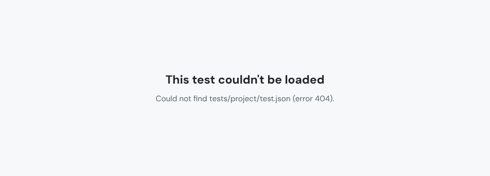
Just uploaded something? GitHub Pages can take a minute or two to catch up, so wait and reload before changing anything. If it's still there, check the folder names exactly: tests/project/test.json and tests/project/prototype/index.html, all lowercase. Then check index.html is at the top of the repo, not inside a desktop_tester-main folder. After any fix, wait for the Actions build and hard-reload.
A task won't tick itself off
Open the builder's Preview as tester and do the task. If the address bar inside the prototype doesn't change to the hash you typed, the prototype isn't using hashes for that screen: send Claude the Make it test-ready prompt from Part 1 step 6. If it's a click task, check the id in my-test-setup.txt matches the builder exactly, with the # in front. Testers can always use I've done this, so nobody gets stuck.
The prototype shows a burger menu or a phone layout
The tester's frame is narrower than the full screen. Ask Claude: "Show the full desktop layout from 860px wide, with the full navigation and no burger menu. Don't change anything else."
Preview in the builder shows the old sample tasks
The builder loaded a saved draft. Open it with ?test=project on the end of the link to load what's on GitHub, or start again and leave the folder name as project.
My upload made a folder called "prototype (1)" or put index.html in the wrong place
Delete the wrong file or folder (open it, … menu, Delete file or Delete directory) and upload again from inside tests/project. GitHub removes a folder once its last file is deleted.
🎉 Your test is live.
Testers open one plain link, the guide panel talks them through your tasks, and you get a results file back from each one.
After each round of testing, fix what you learned in the same Claude chat (Part 1, steps 5–8). Then upload the new index.html into tests/project/prototype; the same name replaces the old file. If your screens or buttons changed, update the tasks in the builder and upload the new test.json too. The link stays the same.